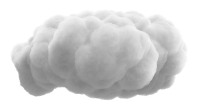
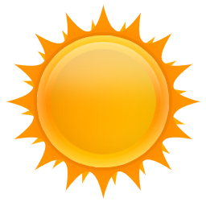

<html>
<head>
    <title>Clouds | Leaflet.ParallaxMarker Demo</title>
    <meta name="author" content="Dag Jomar Mersland">
    <link rel="stylesheet" href="https://npmcdn.com/leaflet@1.0.0-rc.3/dist/leaflet.css" />
    <script src="https://npmcdn.com/leaflet@1.0.0-rc.3/dist/leaflet.js"></script>
    <script src="../Leaflet.ParallaxMarker.js"></script>

    <style>
        #map { width: 100%; height: 100%; margin: 0px; padding: 0px; position: absolute; top: 0px; left: 0px; }

    </style>
</head>
<body>

<div id="map"></div>

<script>

    var center = {lat: 63.417103647850126, lng: 10.403537750244142};
    var map = L.map('map', {scrollWheelZoom: false, doubleClickZoom: false, boxZoom: false, touchZoom: false}).setView(center, 14);

    var basemap = L.tileLayer('https://cartodb-basemaps-{s}.global.ssl.fastly.net/light_all/{z}/{x}/{y}.png', {
        errorTileUrl: 'https://tiles.mazemap.com/v1/default.png',
        tileSize: 256,
        attribution: '<a href="https://www.mapzen.com/rights">Attribution</a>. Data &copy;<a href="https://openstreetmap.org/copyright">OSM</a> contributors.',
        maxZoom : 19,
        subdomains: 'abcd',
        minZoom : 11,
        zIndex: 1,
        updateWhenIdle: false
    }).addTo(map);


    var cloudsMedium = [
        {latlng: {lat: 63.42287395311381, lng: 10.387744903564455} },
        {latlng:  {lat: 63.42425634961289, lng: 10.40782928466797} },
        {latlng: {lat: 63.419648101985715, lng: 10.42302131652832} },
        {latlng: {lat: 63.412811170054, lng: 10.414695739746096} },
        {latlng: {lat: 63.411120890614214, lng: 10.387744903564455} },
        {latlng:  {lat: 63.41911042483627, lng: 10.392723083496096} },
        {latlng:  {lat: 63.41672916195147, lng: 10.378475189208986} },
        {latlng:   {lat: 63.42928617415903, lng: 10.40456771850586} }
    ]


    for(var i = 0; i < cloudsMedium.length; i++){
        var icon =  L.divIcon({className: 'parallax-cloud medium',  html: '', iconSize: [152, 84], iconAnchor: [76, 42]});
        L.parallaxMarker(cloudsMedium[i].latlng,{icon: icon, parallaxZoffset: 2, opacity: 0.6}).addTo(map);
    }

    var cloudsBig = [
        {latlng: {lat: 63.417103647850126, lng: 10.403537750244142} },
        {latlng: {lat: 63.42241313946417, lng: 10.41984558105469} },
        {latlng: {lat: 63.41611461038977, lng: 10.427742004394533} },
        {latlng: {lat: 63.427481682164895, lng: 10.387144088745119} },
        {latlng: {lat: 63.409661023646464, lng: 10.39212226867676} },
        {latlng: {lat: 63.413963576186994, lng: 10.37238121032715} }
    ]

    for(var i = 0; i < cloudsBig.length; i++){
        var icon =  L.divIcon({className: 'parallax-cloud big',  html: '', iconSize: [200, 110], iconAnchor: [100, 55]});
        L.parallaxMarker(cloudsBig[i].latlng,{icon: icon, parallaxZoffset: 10, opacity: 0.4}).addTo(map);
    }


    var cloudsHuge = [
        {latlng:  {lat: 63.41100564066071, lng: 10.409631729125978} },
        {latlng:  {lat: 63.42056981078019, lng: 10.370063781738281} },
        {latlng:  {lat: 63.42602264811434, lng: 10.4205322265625} },
    ]

    for(var i = 0; i < cloudsHuge.length; i++){
        var icon =  L.divIcon({className: 'parallax-cloud huge',  html: '', iconSize: [600, 330], iconAnchor: [300, 165]});
        L.parallaxMarker(cloudsHuge[i].latlng,{icon: icon, parallaxZoffset: 20, opacity: 0.3}).addTo(map);
    }

    //map.setCenter(paraMarker.getLatLng());
    // paraMarker.remove();


</script>
</body>
</html>
